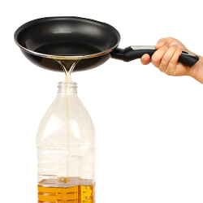

Secos
Plasticos
Vidrio / Metal
Papel / Carton

Aceite
Aceite
Aceite
Aceite
Aceite
¿De que está hecho? Compuesto orgánico líquido obtenido de fuentes vegetales. ¿Dónde lo llevo? Colocar dentro de una botella limpia, debe estar frío para evitar que se deforme. Acercalo a los puntos móviles de GIRO o al PUNTO GIRO . Recibimos hasta 2 litros por persona. Si sos generador gastronómico y generas mayores cantidades de aceite vegetal usado, contactanos a girocatamarcacapital@gmail.com para sumarte al programa de "Comercios Responsables" y al circuito de recolección especial para gastronómicos. ¿Cuál es el destino? La inadecuada gestión de este material puede ocasionar obturación de cañerías, contaminación y degradación de cursos de agua y contaminación del suelo por derrames. El aceite que recibimos en los puntos móviles es gestionado por Emprendedores Sostenibles locales, que lo reciclan transformándolo en jabones. A mayor escala, el aceite que se recolecta de los gastronómicos es gestionado por un empresa de alcance nacional especializada para su transformación en biocombustible.
reciclar
cerrar